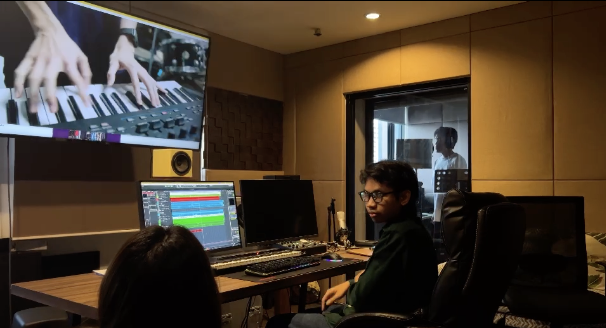
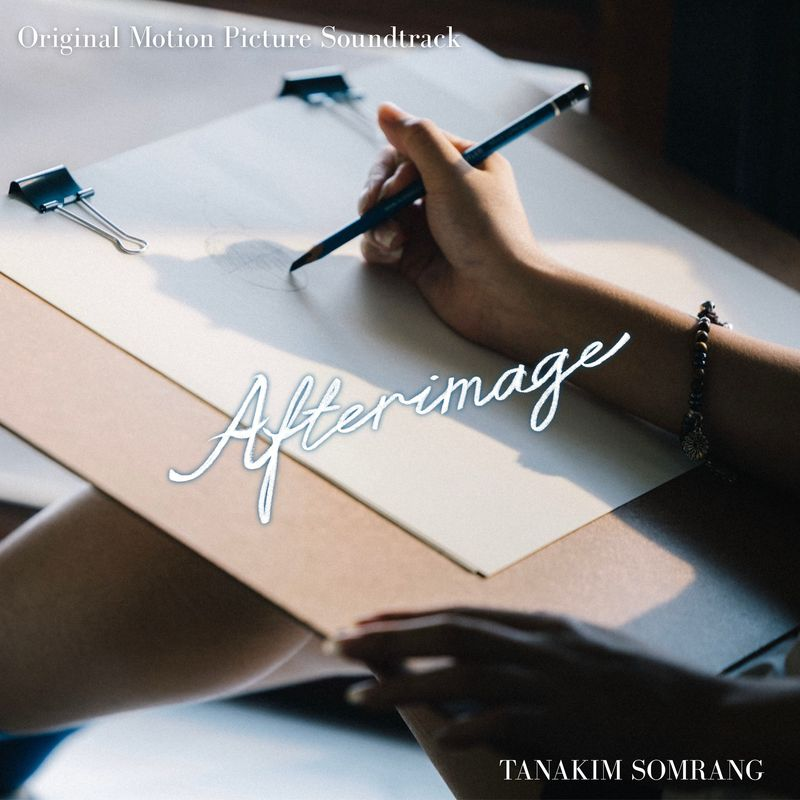

Film · TV Series · Animation · Short Film


Tanakim "Kim" Somrang is a music producer, composer, and mixing/mastering engineer graduated from the College of Music, Mahidol University. With professional experience refined at Banana Sound Studio, he specializes in music scoring and production across various media, including feature films, short films, and TV series. Tanakim’s notable credits include working as an Assistant Orchestrator for Tee Yod 3 (2025) and Assistant Music Composer for Ghost Board (2026) and Attack 13 (2025). His compelling cinematic scores have garnered industry recognition, earning a Best Original Score nomination at the Digital Griffix Films Awards 2026 (ก.1 หมากสุดท้าย) and contributing to award-winning projects at the International Thai Film Festival (ITFF) 2025. He is driven by a passion for storytelling through music and a commitment to technical excellence in audio production.
Listen on Spotify
Listen on Apple Music